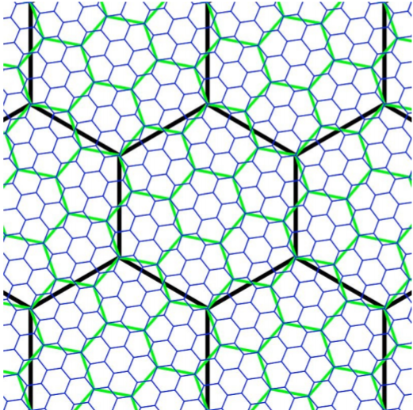

1. STIndex 概览
1.1 简介
STIndex提供了一种开箱即用的空间/时空索引. 目前支持基于时间点及时间周期的时间索引. 其空间索引依赖于GeoIndex,
GeoIndex提供了基于离散全球网格(discrete global grid, DGG)的空间索引, 底层由空间填充曲线(Space-filling curve, SFC)及H3地理空间索引系统(H3 geospatial indexing system)提供支持. GeoIndex重点关注二维的平面空间索引(即对经纬度的索引), 因为几乎没有日常应用会关注高程值. 虽然H3只支持平面索引, 但是GeoIndex实现的底层空间填充曲线支持任意维度的索引. GeoIndex主要提供了以下功能:
- 给定一个经纬度点, 获取指定索引类型及分辨率下的索引值;
- 给定索引值及其对应的索引类型和分辨率, 获取其对应的经纬度边界范围, 或其中心点;
- 给定一个经纬度边界范围, 获取其对应的索引区间集合;
- 给定索引值或区间及其对应的索引类型和分辨率, 获取其父层级的索引区间;
- 给定索引值或区间及其对应的索引类型和分辨率, 获取其邻居空间单元的索引区间.
此外, 值的说明的是, GeoIndex本身由Java语言实现了一个完整的、支持任意维度索引的空间填充曲线库, 而其对H3的支持只是封装了Uber官方给出的Java Binding.
STIndex本质上是一种降维编码方案, 它首先基于一定的时空粒度和剖分框架对时间和空间维度进行剖分, 形成一个个时空单元, 再采用一定的方法对时空单元进行一维编码. 该编码尽可能地将邻近的时空单元亦做邻近表达. 理论上可将时空维度视为一个多维空间进行统一的剖分和编码, 然而时间维度和空间维度存在巨大的差异(例如时间是无界且延续的, 而空间显然是有界的), 直接对其进行统一编码在实践中存在诸多问题. STIndex对时间和空间分别进行剖分和编码, 然后以一定的方式进行串接, 最终以串接得到的一维编码表示时空单元.
1.2 用例
STIndex可用于分析型的时空数据库, 普遍的方案是将STIndex的编码值作为键, 其对应的值即为该编码对应时空单元内的时空数据. 目前基于键值对存储的数据库(如Redis, HBase, Accumulo, Cassandra, 它们都是基于SSTable和LMS存储引擎的)都可利用STIndex将时空查询转化为多区间查询, STIndex将给定的时空查询尽可能地转化为数量少的区间查询, 以减少随机IO的次数.
此外, STIndex可以方便地转化为任意形式的字符串编码(尽管目前的字符串编码仅是二进制编码的十六进制表示), 以便用于社交媒体数据的Hashtag, STCode便是这样一种方法, 它将经度/纬度/时间用类似GeoHash的方法进行编码. 实际上STIndex完全可以取代STCode, 且提供了更加灵活的时空编码方式.
2. 时空索引
2.1 基本概念
| 图1. 具有层次关系的Hilbert曲线((a), (b), (c))对应的层级依次为1, 2, 3) |
图2. 时空单元 |
- 分辨率: 时间和空间剖分都需要指定分辨率. 时间分辨率指剖分的最小时间粒度, 通常为年, 月, 日, 时, 分, 秒中的一种; 空间分辨率指离散全球网格剖分的层次, 如图1中的Hilbert曲线其分辨率分别为1, 2, 3.
- 索引值: 指对时空单元进行一维编码后得到的值, 在STIndex中用二进制数组表示, 可对其进行适当的编码.
- 索引区间: 指一维编码上的一个区间, 对应时空邻近的时空单元.
- 空间单元: 指由离散全球网格划分得到的单元. 在空间填充曲线中为矩形, 在H3中为六边形.
- 父空间单元:
- 子空间单元:
- 时空单元: 指经过时间和空间剖分后得到的最小单元, 与索引值一一对应.
2.2 时间索引
由于时间的一维性, 不需要对其进行降维编码, 只需要考虑以何种形式与空间编码进行串接. STIndex提供了两种形式的时间编码:
- 时间点编码: 适用于时间点的查询, 一般用于在线查询场景. 时间点并非指时间维度上的一个点, 它与编码选取的最小时间粒度有关, 例如在以年为最小粒度的编码中, 2020年即为一个时间点, 在以月为最小粒度的编码中, 2020年1月即为一个时间点, 以此类推. 时间点编码将直接与空间编码串接.
- 时间周期编码: 适用于在时间上具有周期性特征的查询, 更多的用于分析性的场景, 如查询
2.3 空间索引
2.3.1 空间填充曲线
空间填充曲线是一种基于矩形网格的、递归四叉剖分的空间索引. 理论上, 空间填充曲线可以对任意维的数据进行索引, STIndex所实现的空间填充曲线库本身也支持任意维度的索引. 但是直接将时间或高程等维度用空间填充曲线进行索引需要额外的研究, 因此STIndex只利用空间填充曲线对经纬度进行索引. 目前, STIndex已经完整实现了Z-order曲线及Hilbert曲线, 后续将添加对XZ-order曲线的支持.
Z-order曲线及Hilbert曲线的剖分方式如图1所示. 现有的研究表明, Hilbert曲线的性能优于Z-order曲线, Z-order曲线的优势是实现简单. 此外, 由于Z-order曲线的编码值是通过交错各维度坐标值的二进制表示来计算, 因此各维度的精度必须一致.
| 图3. Z-order曲线 |
图4. Hilbert曲线 |
2.3.2 H3
H3是Uber开源的一个离散全球网格索引系统. 它将地球投影到一个二十面体(icosahedron)上. H3网格由布满地球的122(122 = 4 * 20 + (3 * 20) / 2 + (3 * 20) / 5)个基本单元(base cell)组成, 每个面包含10个单元, 其中4个单元仅属于一个面, 3个单元跨越两个面, 3个单元跨越5个面.
| 图1. 正二十面体(左), 将地球投影到正二十面体(中), 每个面的基本单元(右) |
由于单纯使用正六边形无法铺满整个地球, 因此H3在二十面体的每个顶点铺设了一个正五边形, 即图1(右)中落在每个面顶点处的正三角形. 这些顶点是使用R. Buckminster Fuller的球形二十面体方向进行定位的, 所有顶点都放置在水中.
H3使用7孔径(7 aperture)的方法对六边形进行层次划分, 在每一层中利用中心位置索引(Central Place Indexing)排列对7个孔径进行编号.
|  |  |
| 图2. 7孔径划分法(左), 中心位置索引(右) |
H3索引编码由64位的整型表示, 这里仅讲述单元索引的排列, 具体可见H3文档. H3单元索引的编码值按如下顺序装入一个64位整数的低63位中:
- 4位表示索引模式, 在单元索引中为1,
- 3位保留,
- 4位表示0-15的单元分辨率,
- 7位表示0-121的基本单元,
- 最后45位每3位用于表示从分辨率1到15的中心位置索引值, 未使用的位被置为1.
3. API 参考
Updating...
© Copyright 2020 STDI Sys, Liebing Yu
Licensed under the Apache License, Version 2.0